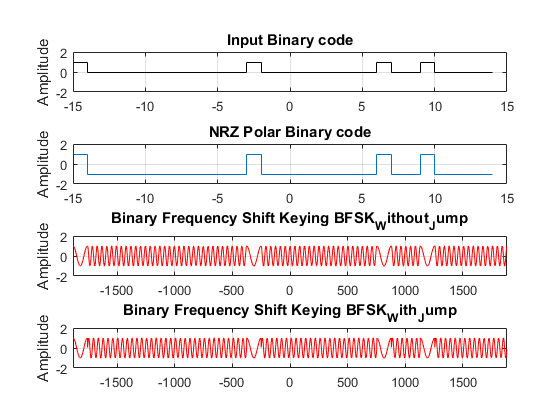
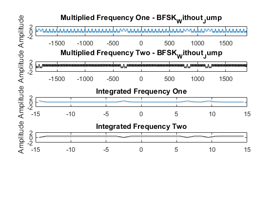
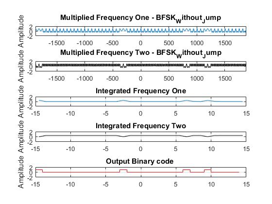

Contents
Section A
pnSequence1 = comm.PNSequence('Polynomial',[12 3 0], ...
'SamplesPerFrame',8190,'InitialConditions',[0 0 0 0 0 0 0 0 0 0 0 1]);
Binary_Random_Input = pnSequence1();
Binary_Random_Input = Binary_Random_Input(1:30)
frequency_one = 1;
frequency_two = 3;
t = (0:0.05:2*pi*30);
NRZ_Polar = Binary_Random_Input';
BFSK_Without_Jump = 0*t;
BFSK_With_Jump = 0*t;
for i = 1:length(Binary_Random_Input)
if Binary_Random_Input(i) == 1
NRZ_Polar(i) = 1;
else
NRZ_Polar(i) = -1;
end
end
for j = 1:length(t)
if NRZ_Polar(floor(t(j)/(2*pi))+1) == 1
BFSK_Without_Jump(j) = NRZ_Polar(floor(t(j)/(2*pi))+1)*cos(frequency_one*t(j));
else
BFSK_Without_Jump(j) = -NRZ_Polar(floor(t(j)/(2*pi))+1)*cos(frequency_two*t(j));
end
end
for j = 1:length(t)
if NRZ_Polar(floor(t(j)/(2*pi))+1) == 1
BFSK_With_Jump(j) = NRZ_Polar(floor(t(j)/(2*pi))+1)*cos(frequency_one*t(j));
else
BFSK_With_Jump(j) = -NRZ_Polar(floor(t(j)/(2*pi))+1)*sin(frequency_two*t(j));
end
end
figure
subplot(4,1,1);stairs([-length(Binary_Random_Input)/2:length(Binary_Random_Input)/2-1],Binary_Random_Input,'k')
axis([-length(Binary_Random_Input)/2 length(Binary_Random_Input)/2 -2 2]);title('Input Binary code');grid on; ylabel('Amplitude');
subplot(4,1,2);stairs([-length(NRZ_Polar)/2:length(NRZ_Polar)/2-1],NRZ_Polar)
axis([-length(NRZ_Polar)/2 length(NRZ_Polar)/2 -2 2]);title('NRZ Polar Binary code');grid on; ylabel('Amplitude');
subplot(4,1,3);plot([-length(t)/2+1/2:length(t)/2-1/2],BFSK_Without_Jump,'r')
axis([-length(t)/2 length(t)/2 -2 2]);title('Binary Frequency Shift Keying BFSK_Without_Jump');grid on; ylabel('Amplitude');
subplot(4,1,4);plot([-length(t)/2+1/2:length(t)/2-1/2],BFSK_With_Jump,'r')
axis([-length(t)/2 length(t)/2 -2 2]);title('Binary Frequency Shift Keying BFSK_With_Jump');grid on; ylabel('Amplitude');
Binary_Random_Input =
1
0
0
0
0
0
0
0
0
0
0
0
1
0
0
0
0
0
0
0
0
1
0
0
1
0
0
0
0
0

Section B
BPSK_Multiplied_Integrated_Frequency_One = 0*NRZ_Polar;
BPSK_Multiplied_Frequency_One = 0*BFSK_Without_Jump;
BPSK_Multiplied_Frequency_Two = 0*BFSK_Without_Jump;
for k = 1:length(t)
BPSK_Multiplied_Frequency_One(k) = BFSK_Without_Jump(k) .* cos(frequency_one*t(k));
BPSK_Multiplied_Frequency_Two(k) = BFSK_Without_Jump(k) .* cos(frequency_two*t(k));
end
offset = 0;
for m = 1:length(NRZ_Polar)
BPSK_Multiplied_Integrated_Frequency_One(m) = sum(BPSK_Multiplied_Frequency_One((m-1)*125+1:m*125))/(125);
BPSK_Multiplied_Integrated_Frequency_Two(m) = sum(BPSK_Multiplied_Frequency_Two((m-1)*125+1:m*125))/(125);
end
figure
subplot(5,1,1);plot([-length(BPSK_Multiplied_Frequency_One)/2+1/2:length(BPSK_Multiplied_Frequency_One)/2-1/2],BPSK_Multiplied_Frequency_One)
axis([-length(BPSK_Multiplied_Frequency_One)/2 length(BPSK_Multiplied_Frequency_One)/2 -2 2]);title('Multiplied Frequency One - BFSK_Without_Jump');grid on; ylabel('Amplitude');
subplot(5,1,2);plot([-length(BPSK_Multiplied_Frequency_Two)/2+1/2:length(BPSK_Multiplied_Frequency_Two)/2-1/2],BPSK_Multiplied_Frequency_Two,'k')
axis([-length(BPSK_Multiplied_Frequency_Two)/2 length(BPSK_Multiplied_Frequency_Two)/2 -2 2]);title('Multiplied Frequency Two - BFSK_Without_Jump');grid on; ylabel('Amplitude');
subplot(5,1,3);plot([-length(BPSK_Multiplied_Integrated_Frequency_One)/2+1/2:length(BPSK_Multiplied_Integrated_Frequency_One)/2-1/2],BPSK_Multiplied_Integrated_Frequency_One)
axis([-length(BPSK_Multiplied_Integrated_Frequency_One)/2 length(BPSK_Multiplied_Integrated_Frequency_One)/2 -2 2]);title('Integrated Frequency One');grid on; ylabel('Amplitude');
subplot(5,1,4);plot([-length(BPSK_Multiplied_Integrated_Frequency_Two)/2+1/2:length(BPSK_Multiplied_Integrated_Frequency_Two)/2-1/2],BPSK_Multiplied_Integrated_Frequency_Two,'k')
axis([-length(BPSK_Multiplied_Integrated_Frequency_Two)/2 length(BPSK_Multiplied_Integrated_Frequency_Two)/2 -2 2]);title('Integrated Frequency Two');grid on; ylabel('Amplitude');
BFSK_demodulation = Comparator(BPSK_Multiplied_Integrated_Frequency_Two,...
BPSK_Multiplied_Integrated_Frequency_One);
Binary_Output = reshape(BFSK_demodulation,[],2)
subplot(5,1,5);stairs([-length(BFSK_demodulation)/2:length(BFSK_demodulation)/2-1],BFSK_demodulation,'r')
axis([-length(BFSK_demodulation)/2 length(BFSK_demodulation)/2 -2 2]);title('Output Binary code ');grid on; ylabel('Amplitude');

Function
function Output = Comparator(Offset, input)
Output = (input>Offset);
end
Binary_Output =
15×2 logical array
1 0
0 0
0 0
0 0
0 0
0 0
0 1
0 0
0 0
0 1
0 0
0 0
1 0
0 0
0 0
